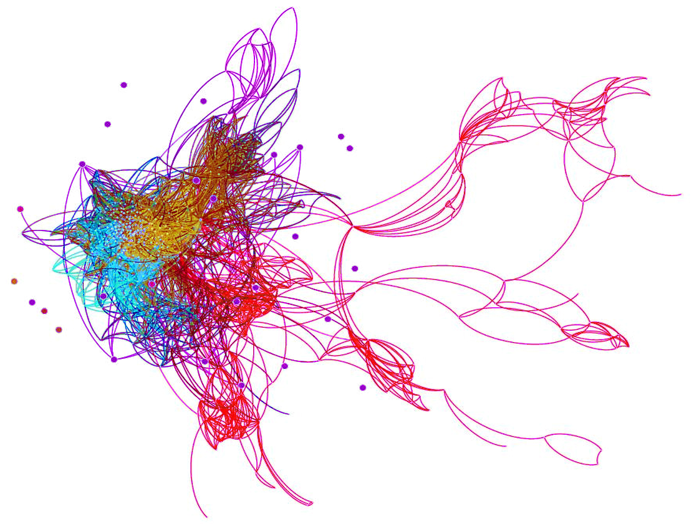

Machine Learning & Data Mining
-

- The code to extract the publicly available databases and to calculate the topological features for the graph databases is here.
- The code to cleanse and organize the data is here.
- The code to perform the machine learning for many (supervised and unsupervised) methods is here.
- A talk about the project is here. The first draft of the paper is here.
-
- Material from the graduate course at Stony Brook University. The source code for the homework is here, with many algorithms in Python/NumPy comparing
Naive-Bayes vs. Logistic Regression, performing
Adaboost, and comparing
kNN vs. SVM.
- My theoretical homework, from the entire course, is here.
-
Information Diffusion in Twitter
A very introductory essay about graphs and information diffusion in social network, under supervision of Prof. K. Mueller. Simple examples of high-dimensional space parameterizing each tweet to capture the information diffusion and graph layout.
-
Data Analysis in Astronomy (IDL)
Data extraction, calibration, and cleansing for astrophysical images for photometry and spectroscopy:
-
On the Spectroscopy Study of the Earthshine Spectra:
report
and source code.
-
On the Calculation of the Angular Diameter of the Sun by Michelson Radio Interferometer:
report and source code.
- On the Measurement of Stellar Fluxes on the Interstellar Dust Extinction of M35:
report and source code.